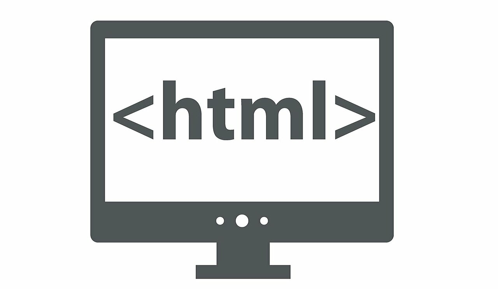
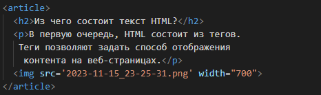
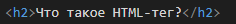
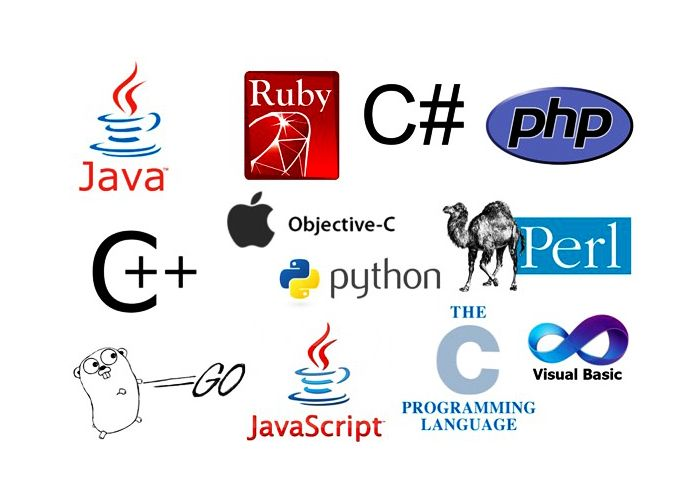

Что такое HTML?
HTML расшифровывается как HyperText Markup Language (язык гипертекстовой разметки). Это язык разметки документов во Всемирной паутине (World Wide Web). HTML — это стандартизированный язык, позволяющий составлять форматированный текст. Браузер интерпретирует его и отображает на экране элементы веб-страниц.

Зачем нужен HTML?
HTML позволяет структурировать контент на веб-страницах, делая его понятным браузеру и обеспечивая основу для добавления стилей и интерактивности.
Из чего состоит текст HTML?
В первую очередь, HTML состоит из тегов.
Теги позволяют задать способ отображения
контента на веб-страницах.

На картинке дан пример кода. Этот отрезок кода показывает как был напечатан текст сверху.
Что такое HTML-тег?
Тег — это специальное служебное слово, заключенное в угловые скобки. Его ещё называют «элемент HTML».
Тегов в языке HTML много и каждый что-то делает с контентом, который обычно находится внутри скобок или между тегами.

К примеру тег h2 делает текст жирным.
Что такое CSS?
CSS - это сокращенная форма каскадных таблиц стилей. Он предоставляет простые и эффективные альтернативы для указания различных атрибутов для тегов HTML. Используя CSS, вы можете указать свойства стиля для любого элемента HTML. Без необходимости указывать детали отдельно на каждой веб-странице, вы можете просто создать файл .CSS и заполнить детали там. Он будет автоматически обновляться на каждой веб-странице .HTML.
Сколько времени надо чтобы изучить HTML?
Вам потребуется от одной до двух недель, чтобы понять всю суть HTML, и около месяца практики, чтобы освоить язык. Вы можете выучить html+css быстро, даже меньше чем за 3 недели.
Какие ещё языки можно выучить для создания продвинутого сайта?
Java, Ruby, Python, JavaScript (Node.js), Go и PHP.
Стоит выбрать один из них.

Когда, кем и где был создан HTML?
HTML был разработан британским учёным Тимом Бернерсом-Ли приблизительно в 1986 — 1991 годах в стенах ЦЕРНа в Женеве в Швейцарии. HTML создавался как язык для обмена научной и технической документацией, пригодный для использования людьми, не являющимися специалистами в области вёрстки.